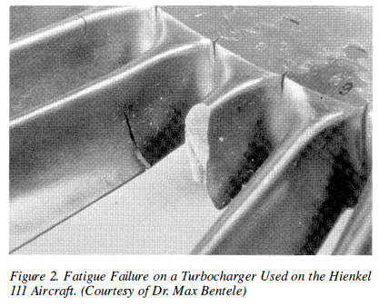
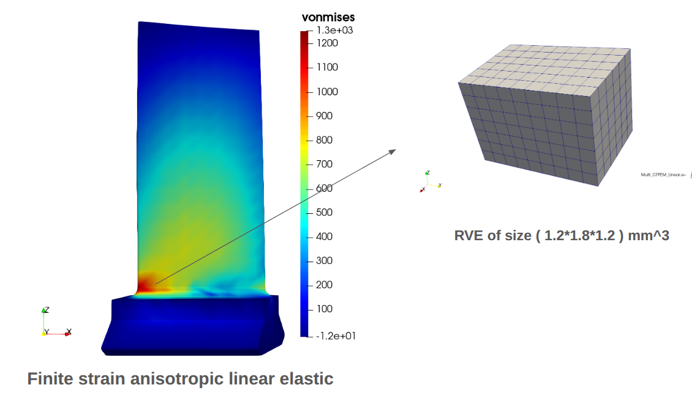
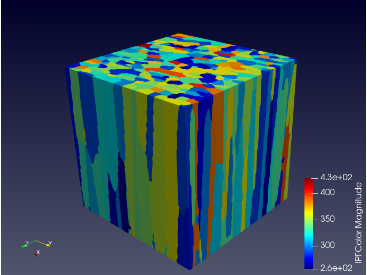

An edge dislocation — one extra half-plane of atoms ending on the slip plane.
Plasticity is what happens when enough of these move. My work is counting them,
and predicting the point where a component stops coming back.
I am a Research Scholar at IIT Delhi. My research covers crystal plasticity,
finite element analysis and creep–fatigue interaction — decoding the mechanics of
superalloys with frameworks like MOOSE to engineer a stronger, more resilient future.
The work is multiscale: the goal is to bridge the gap between the two scales.
High-temperature plasticity of LPBF 316L stainless steel
How laser powder bed fusion (LPBF) 316L behaves once it is taken to temperature —
and how much of that behaviour is inherited from the way it was printed.
High-temperature deformation
Systematic study of the mechanical behaviour of LPBF-fabricated 316L stainless
steel at an elevated temperature of 850 °C.
Anisotropy and build orientation
Uniaxial tensile response compared along vertical (parallel to build) and
horizontal (perpendicular to build) orientations to isolate the effect of build direction.
Strain-rate sensitivity
Response across multiple strain rates, revealing a transition from strain softening
at low rates to strain hardening at higher rates.
Microstructural mechanisms
Deformation shifts from dislocation slip and twinning at room temperature to
dynamic recrystallisation at elevated temperature.
Turbine blades fail where creep and fatigue act together. A dislocation
density-based crystal plasticity model, run in MOOSE, is used to find where that
happens and how long it takes.

Failure modes in turbine blades.

Probable locations of blade failure due to creep–fatigue interaction, corrosion,
oxidation and other degradation mechanisms.

Validation at the RVE level of creep–fatigue interaction.